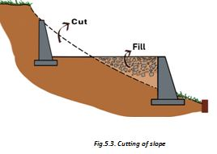
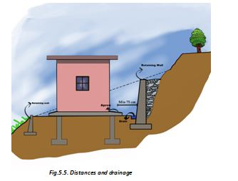
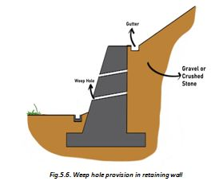

● Stones obtained during the clearing of site must be stored in heaps as they can be used during the construction phase. These can be kept outside. However, other building materials like cement, timber etc. must be kept under a weatherproof shed.
● Cut the slope in 500 to 1000 mm high steps and store stones obtained during cutting.
● Avoid slope cuttings more than 1000 mm deep (except under expert support) to obtain one large terrace for making house, instead make several terraces each with limited depth of cutting. Level the site using granular material/soil.



● Leave a gap of at least 750mm or the depth of foundation of building, whichever is greater, between the retaining wall and the wall of your building.
● Make drains near the feet of your retaining walls to drain water away, at down-hill side.
● Make foundation of the retaining walls on firm ground.
● Mark spaces to store material at site. Make a waterproof shelter to store cement.
● Make weep holes in the retaining walls to drain out water collected behind it.
● Provide screen or fine hole nylon mesh at weep-hole inlet to avoid washing of fine particles through weep-holes.
● Fill the backfill gap of retaining wall by well compacted boulder to allow free flow of water on uphill side of retaining wall.
● Check if there are any trees that may fall on your house. Trim/remove those trees.
● Ensure that foundations of your house are over natural ground and not in filling behind the retaining walls.